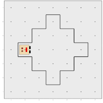
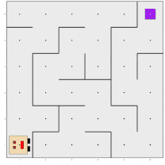

¿Quién es Karel? / Who is Karel?
Desarrollado por el Dr. R. E. Pattis en la Universidad de Stanford en 1981, Karel es una herramienta que persigue la misión de enseñar conceptos fundamentales y generales de programación, como descomposición algorítmica, declaraciones condicionales, bucles y más. Aunque Karel ha sido implementado en varios lenguajes a lo largo de los años, este es el primer paquete que trae a Karel al entorno de R.
Esta herramienta es útil para ser utilizada con estudiantes que no tienen experiencia previa en R ni en otro lenguaje, pero que deben adquirir nociones elementales de programación porque necesitan comenzar a usar R para sus estudios. El paquete pretende ayudar a incorporar estos conocimientos de forma lúdica, permitiendo que los usuarios jueguen y completen desafíos con Karel. Por ejemplo, este paquete es utilizado en un curso informal de pre-ingreso a la carrera de Licenciatura en Estadística en la Universidad Nacional de Rosario (Argentina) con futuros estudiantes que en su mayoría son adolescentes y no tienen experiencia en programación.
El paquete Karel ofrece a través de sus viñetas lecciones para transmitir estos conocimientos generales que, si bien no incluyen herramientas de programación para análisis de datos o técnicas de codificación avanzadas, se enfocan en las bases de la programación, enseñadas en el entorno R.
Developed by Dr. R. E. Pattis at Stanford University in 1981, Karel is a tool aimed at teaching fundamental and general programming concepts, such as algorithmic decomposition, conditional statements, loops, and more. Although Karel has been implemented in various languages over the years, this is the first package to bring Karel to the R environment.
This tool is useful to be used with students who have no prior experience in R or any other language but need to acquire basic programming notions because they need to start using R for their studies. The package aims to help incorporate this knowledge in a playful way, allowing users to play and complete challenges with Karel. For example, this package is used in an informal pre-entry course for the Bachelor’s degree in Statistics at the National University of Rosario (Argentina) with future students who are mostly teenagers and have no programming experience.
The Karel package offers lessons through its vignettes to convey these general knowledge, which, while not including programming tools for data analysis or advanced coding techniques, focus on the foundations of programming, taught in the R environment.
Instalación / Installation
Podés instalar karel desde CRAN / You can install karel from CRAN:
install.packages("karel")También podés instalar la versión en desarrollo desde GitHub / You can also install the development version from GitHub:
# install.packages("devtools")
devtools::install_github("ropensci/karel")Ejemplos / Examples
Podés programar a Karel para que realice tareas como las siguientes / You can program Karel to perform tasks such as:


Visitá los artículos para ver cómo lograrlo y solucionar muchos casos más / Visit the articles to learn how to do it and to solve other problems.
Código de conducta / Code of conduct
Por favor notar que este paquete se ha publicado con un Código de Conducta. Please note that this package is released with a Contributor Code of Conduct. Please note that this package is released with a Contributor Code of Conduct. By contributing to this project, you agree to abide by its terms.